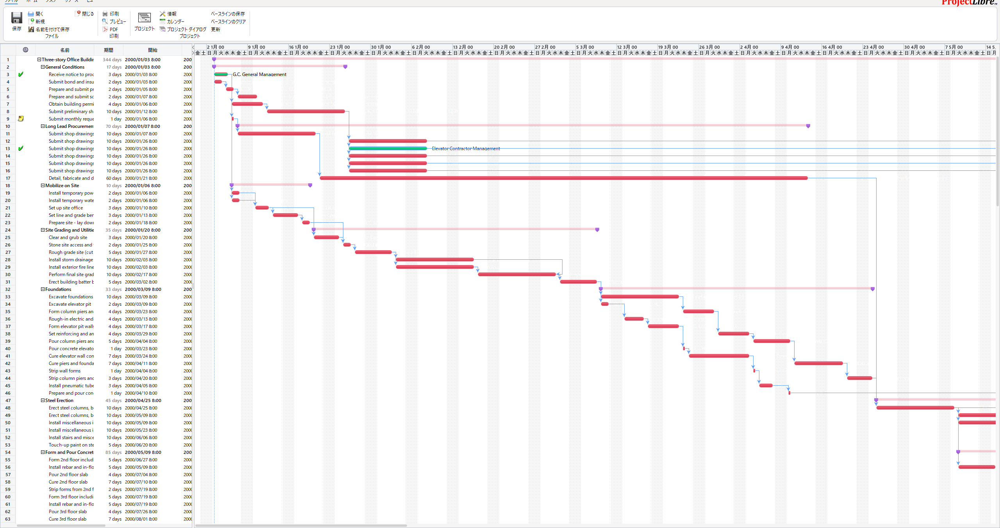

Current Release
v0.0.11
Gantt、タスク表、依存関係、進捗管理を扱うデスクトップ型の計画ツールを、 現代 JDK と Windows 配布フローに合わせて整えた実用重視の fork です。
派手な演出よりも、読みやすさ、操作の安定性、配布のしやすさを優先して、 日常業務で使いやすい最小構成へ寄せています。
現在のビルドと配布は Gradle を単一の入口として運用しており、 サポート対象の実行基準は Java 25+ に揃えています。

通常利用向けの自己完結型インストーラーです。GitHub Releases 上の最新 MSI をそのまま案内しています。
v0.0.11 では Gantt の進捗表現を見直し、進んだ部分と残り部分の見分けがつくように配布物へ反映しています。
v0.0.4 の配布物も GitHub Releases に残しています。必要な場合は旧版の MSI または JAR を取得できます。
タスク表と Gantt の同期、ズーム後の見え方、貼り付けや編集まわりの落ちやすい箇所を重点的に整理しています。
不要なモジュール混入を抑え、標準機能を残したまま配布サイズの膨張を避ける構成へ寄せています。
Gradle、JDK 25+、jpackage ベースの Windows 配布を軸にして、継続的にリリースしやすい状態を維持しています。